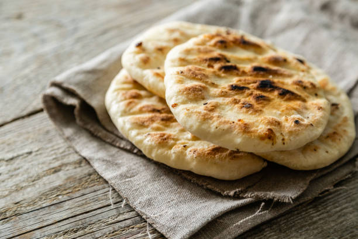

Home
Pita

Description
Easy way to make fluffy authentic pita bread without much time!
Estimated Time: 1 hour and 10 minutes
Ingredients
- 500g strong white bread flour
- 360g lukewarm water
- 3 tsp dry instant yeast
- 1 tsp salt
- 1 tsp sugar
Steps
- To prepare this pitta bread recipe add in a mixer's bowl the yeast, sugar and water and blend to dissolve the yeast. Set aside for 5-10 minutes until yeast froths.
- Add the flour and salt and mix using the dough hook for 6-8 minutes. Alternatively you could mix the ingredients by hand.
- Depending on the flour used, the dough may need a little bit less or more flour than this pita bread recipe calls for. After mixing for a while the dough for your pita bread should become an elastic ball and a bit sticky.
- When ready, coat the dough with olive oil, place in a bowl and cover with plastic wrap and a kitchen towel. Let it sit in a warm place, for at least 20 minutes or until it doubles its size. This is an important step for this pita bread recipe. The first proof makes the pita bread fluffy and soft. If it is winter, turn the oven on for a minute or two, until it’s a little warm, switch it off and then let the dough rise in it.
- Take the dough out of the bowl and gently deflate with your hands. Use just a tiny bit of flour to help you if it is too sticky. Split into 6 evenly sized balls around 145g/ 5 oz. each.
- Let the pita bread balls rest for 15 minutes before shaping. This is the second proof and will allow your dough to relax and become easier to shape.
- To form the pita bread, you can either use a rolling pin, or stretch it with your hands, about 20cm in diameter. A rolling pin will make a crunchier pita, while hand stretching a softer, fluffier one. If the dough springs back, set it aside for a few minutes to rest and then continue rolling again.
- Heat a non-sticking frying pan to medium heat and add just a little bit of olive oil and wipe off any excess. Bake each pita bread for about 3 minutes on each side, until slightly coloured and still soft. If your pan has a lid, place the lid on while baking them to keep the moisture in.
- To give it more colour, when you flip your pita bread, push it lightly with a wooden spoon on the pan.